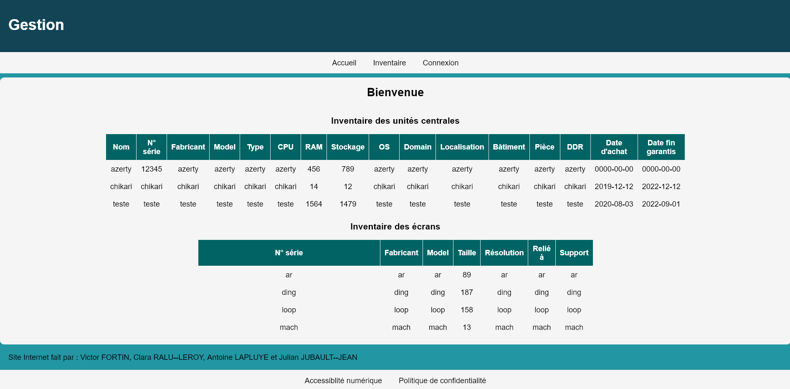

Gestion d'un Parc Informatique

Objectif du projet :
Concevoir et déployer une application web permettant à une entreprise de centraliser, suivre et inventorier l'ensemble de ses équipements informatiques de manière sécurisée.
Mes réalisations & Solutions techniques :
- Développement Backend : Création de la base de données relationnelle (SQL) et programmation des scripts (PHP) pour la gestion dynamique du matériel (ajout, modification, suppression).
- Sécurisation : Intégration d'un système d'authentification robuste avec gestion des droits d'accès (administrateur / utilisateur).
- Déploiement réseau : Configuration de l'environnement serveur et déploiement de l'application sur un serveur embarqué Raspberry Pi 4 (architecture ARM).
- Gestion de projet : Planification des sprints (Méthode Agile/Scrum), calcul des charges de travail et gestion de la matrice des risques.
Compétences mises en œuvre :
PHP SQL HTML / CSS Raspberry Pi
Méthodes Agiles / Scrum Gestion des risques Git / GitHub